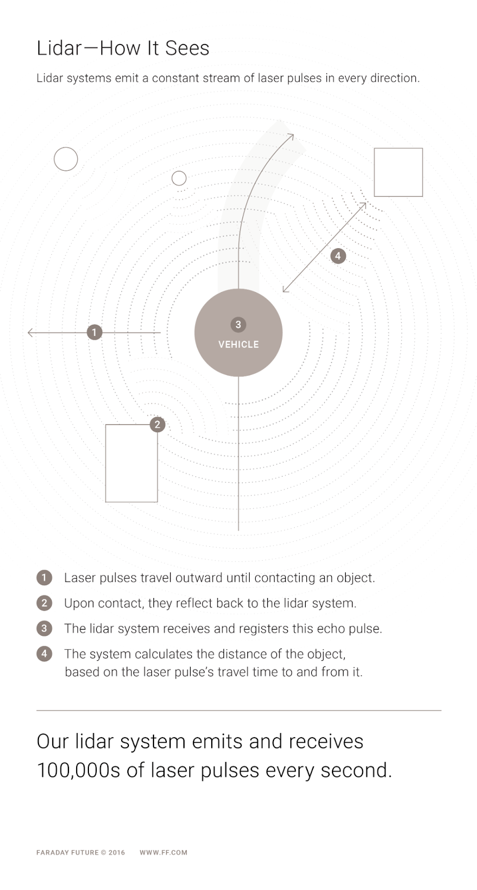
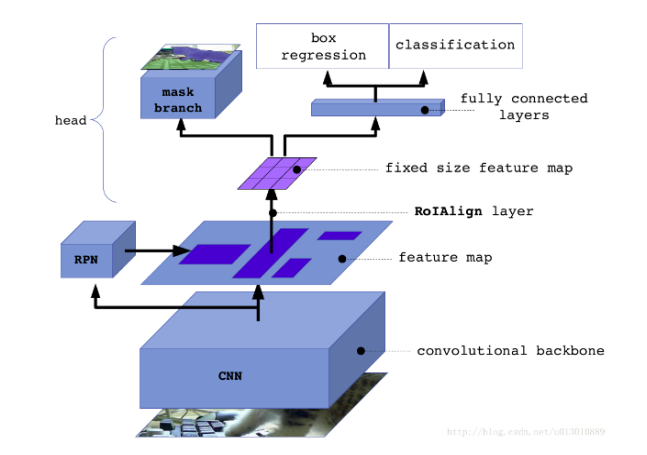
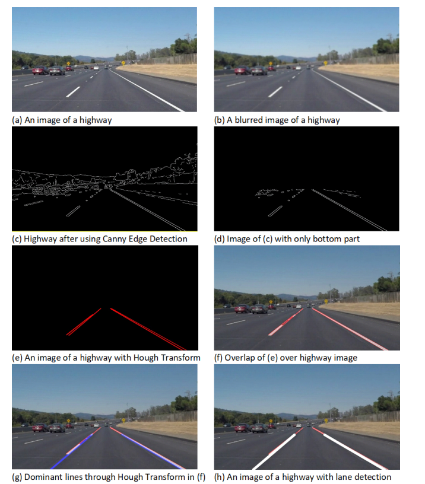
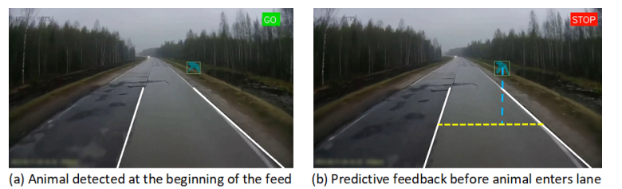
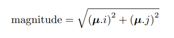
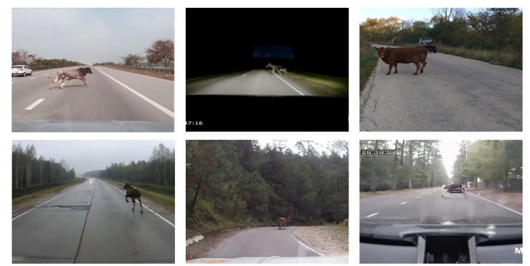
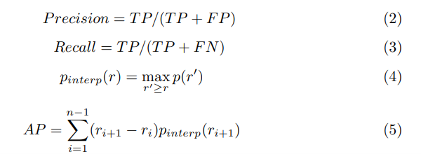
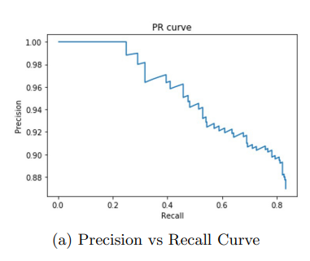
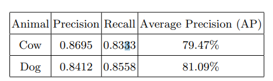

Home
This is a simple website template published with Github Pages. Fork this repository to create your own site!
Introduction
Animals have been a difficult object to avoid on road for human drivers. Recognizing and avoiding vehicle collisions with animals have become a greater challenge to autonomous vehicles. Comparing to human being, some animals are smaller in size which are harder to be detected and their behaviors are less predictable than human. According to Wildlife-vehicle collisions (WVCs), every year United States has 725,000 to 1,500,000 cases of vehicle collisions with wild life. And Canada has roadkill rate of 4 to 8 animals per day. By using Convolution Neural Network (CNN) to perform image segmentation and recognition, the algorithm can detect commonly found animals. Along side with lane detection and animal behavior predictions, the system has the capability to track animals’ behavior in real time and provide movement predictions. If the animal is within the predicted line, the system responses with ‘STOP’ to alert the vehicle.
Picking the Right Sensors
There are two common types of sensors used on autonomous vehicles to visualize surrounding environments to avoid vehicle collisions with human, animals, and obstacles. From here we compare the pros and cons in terms of performance in various conditions for LiDAR (Light Detection and Ranging) sensor and camera sensor.
LiDAR
Determines ranges by targeting objects or surfaces with multiple laser beams. By measuring the time for the laser to return to the receiver, it can detect all surfaces and objects around the LiDAR. Typical LiDAR with 360 degree point of view has a scanning frequency of 10 Hz which scans the surrounding area 10 times in a second.
Camera
Camera sensor converts variable attenuation of light waves through lens into small bursts of current that carry the information of an image. The optical characteristics of a camera can be illustrated as below where light waves pass through camera lens at certain focal length to produce an image on the camera sensor.
Sensor Comparison
Camera vs LiDAR
LiDAR Pros: The significant advantage of LiDAR is that it can provide a 3D output even through shadows, sunlight or headlights from incoming cars which performs better than cameras or even human eyes in these harsh conditions.
LiDAR cons: LiDAR can be sensitive to weather and temperature. The wavelength stability can be affected by temperature and cause a poor Signal-to-Noise ratio which potential can cause a creation of false outcomes.
Camera Pros: With the combination of computer vision and machine learning models, one of the very important things that only camera can do out of all sensors is to read specific text from road signs. Cameras can also be adjustable by simply replace lens to fit different needs. For example fish eye lens can be used for object detection around the vehicle with wider field of view and telephoto lens can be used for narrow long range detection.
Camera Cons: Although cameras are better at imaging, they do not have the direct feature of range detection that LiDAR has. Weather conditions can also be one of the challenges to camera. The picture below shows the camera performance could be reduced with rain or dirt on the lens.

In Conclusion

Since both LiDAR and camera can apply AI alogirhtms and neural networks to post process collected data. With enough computational power, a combination as sensor fusion is currently the best option for object detections with using computer vision. By combining the strength of each sensor, the final result will ensure the most optimal outcome and provide highest safety potentials. In this tutorial, we will be mostly focusing on using only camera sensor with computer vision to analyze animal categories.
Animal Detection Approach
First phase is to select a Neural Network model that can help us with a classification problem. In this tutorial we select Mask R-CNN (Region-based Convolutional Neural Networks) model which can understand complex concepts by processing multiple layers of features. One of the key reasons for selecting Mask R-CNN is that it has already been trained on the MS COCO dataset. The dataset contains 91 common object categories and each one of them having 5,000 labeled instances. The selection of Mask R-CNN has covered the categories of cat, dog, horse, sheep, cow, elephant, bear, zebra, and giraffe.

The network is constructed using ResNet-101 backbone. Multiple layers are grouped and passed through kernels in the size of 1x1, 3x3 and 1x1 in such ordering. A batch normalization layer and ReLU activation unit follows each convolution layer. Bottom-up pathway layers are passed through 1x1 convolution layer for down sampling. Pyramid feature map are generated by having each feature map passing through the 3x3 convolution layer. Once the feature maps are generated, the outputs are fed to box detection and generate region proposals. Then the outputs are fed to box classification, regression, and mask branch. The overall architecture of Mask R-CNN results with outputs containing class IDs, bounding boxes, detection scores and the generated masks for a video frame.
Lane Detection
Second phase is to choose the correct methodology for lane detection. This application helps determine whether the animals post a threat to a moving vehicle. If the animals are detected to be on the side of the road, lane detection system should be able to distinguish such case to ease of reasonable amounts of concerns. Otherwise, animal directions analysis and vicinity tracking need to be performed to predict if the animal has potential intention of entering vehicle’s lane and possibly result a collision.
More detail of lane detection:
The lane detection system is proposed by Param Aggarwal that uses OpenCV to detect lanes on a highway. The system first captures a picture and apply edge detection to generate results (c) from the figure below. Then it selects a region of interest which reduces unnecessary information and generates result (d). Hough transform is then used to analyze and visualize the lanes and overlap the result with highway images. At the end, to eliminate lane jittering from previous results, a moving average is applied to smooth out and stable lane detection on both sides. The detail tutorial from Aggarwal himself can be found at HERE

Tracking
The overview structure of the prediction pipeline is combined with the Mask R-CNN model results and lane detection output to generate animal detection alert for the vehicle. If the animal falls within the detected lane, the system will send out a ‘STOP’ warning. Otherwise, it will continuously keep track of the animal’s direction of their movements.

The location of the bounding box is compared with the midpoint of the lane (yellow line above) to distinguish whether the animal is within the danger zone.
Centroid Tracking Algorithm
This algorithm paves the way to track animal movements over future time frames. Calculations are done by taking Euclidean distance between the centroids of a determined animal over successive frames as clarified ahead. In this system, we track the trajectories of the animal movements by calculating the differences between centroids of the animal within five consecutive frames. Since an image is in 2-dimensional space, the result can be represented as below where µ represents the direction of the animal movements. If the magnitude is over a certain pre-defined threshold, the vector µ is then normalized and stored in a dictionary for each detected animal. 
Experiement Setup
The proposed frame work was tested by MS COCO data set (Microsoft Common Objects in Context). The set contains 91 classes with 5000 annotations. Result will be evaluated in two stages: first stage of success is evaluated by the capability of distinguishing animal classes and recognizing animals from unknown object using CNN. Second stage is evaluated by the precision of predicting whether the animal has caused any potential danger to the vehicle.
To validate first stage, we first train the Mask R-CNN network with MS COCO dataset, then test the framework on compiled dashcam videos from YouTube taken at 30 frames per second. And these testing footages include various countries such as the USA, India, and Australia.

Two parameters precision and recalls are defined to summarize the result. Precision represents if the model can distinguishes animals from non-animals, we get a high precision score. Recall represents if the model detects the animal category correctly, we get a high recall score. The interpolated precision is denoted as r at each recall level. We then select the greatest precision measured as shown in Equation 4 and generate precision-recall curves from these values to calculate average precision in Equation 5.

Results are then compared between the predicted bounding boxes generated by Mask R-CNN model and the actual bounding boxes from the data set. Intersection over Union (IoU) parameter is used to check the overlapping relationship between the predicted bounding boxes and actual bounding boxes. It’s calculated by dividing the intersectional area by the area of the union of predicted bounding boxes and actual bounding boxes.
By repeating the same process, a precision over recall graph can be generated.

The result shows that the test results output of Mask R-CNN model performance on test set consisting cows on road with an IoU of 0.5 has an average precision of 79.47% and dog with 81.09%
